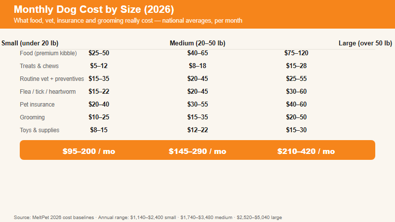

You're Standing in the Kibble Aisle. You've Already Named the Dog.
I've watched this exact scene hundreds of times. Someone walks into a pet store holding a list of supplies they found on Reddit. They've picked out a collar. They've bookmarked a breed guide. They're ready. And then they start adding up the numbers —food, vet, insurance, flea meds —and their face changes.
Nobody wants to be the person who gets a dog and then can't afford it. That's not who you are. You're here because you want to know the real number, not the one on the rescue's brochure. Fair enough. Here it is.
The Big Number: Cost by Dog Size
The single biggest cost variable is your dog's body weight. A Great Dane eats more than a Chihuahua. Shocking, I know. But the difference is larger than most people estimate:
Cost Category
Small (< 20 lbs)
Medium (20–50 lbs)
Large (> 50 lbs)
Food (premium kibble)
$25–$50
$40–$65
$75–$120
Treats & chews
$5–$12
$8–$18
$15–$28
Routine vet (amortized)
$15–$35
$20–$45
$25–$55
Flea/Tick/Heartworm
$15–$22
$20–$45
$30–$60
Pet insurance
$20–$40
$30–$55
$40–$60
Grooming
$10–$25
$15–$30
$20–$40
Toys & supplies
$8–$15
$12–$22
$15–$30
Monthly range
$95–$200
$145–$290
$210–$420
Annual range
$1,140–$2,400
$1,740–$3,480
$2,520–$5,040
Lifetime (12 years)
$13,700–$28,800
$20,900–$41,800
$30,200–$60,500
These are national averages. Your numbers shift based on where you live —vet care in New York costs more than in rural Ohio —but the ratios hold. A large dog costs about 2–2.5× more than a small dog, every month, for its entire life.

Monthly dog costs by size — small, medium and large, 2026 national averages.
The Stuff Nobody Tells You to Budget For
Year one setup. Crate ($40–$100), bed ($20–$40), bowls ($10–$25), leash + collar ($15–$30), puppy shots ($75–$200), spay/neuter ($200–$500), microchip ($25–$50). Between $400 and $1,100 of stuff you buy once and then never think about again.
Emergency vet visits. This is the one that breaks people. My colleague's Lab ate a sock and needed a $4,200 intestinal surgery. A friend's GSD tore her ACL —$5,500 per knee, and she blew the second one six months later. These aren't edge cases. Murphy's Law applies to dogs. Get insurance before you need it. After the diagnosis appears on a medical record, it's a pre-existing condition and nobody covers it.
You're going on vacation. Boarding is $25–$55 a night. A ten-day trip adds $250–$550 to your annual budget. Rover sitters cost about the same. Factor it in.
Training classes. $150–$400 for a six-week group obedience course. One private behavioral consult: $100–$300. This isn't optional —an untrained large dog is a liability. The money you spend on training now saves you the money you'd spend on a lawsuit later.
Puppy destruction. Budget $100–$300 for year one. They chew shoes, baseboards, remote controls, and occasionally drywall. It passes. But it passes expensively.
Where to Save (Without Being Cheap)
Buy food in the largest bag that makes sense. Large bags of premium kibble cost 25–50% less per pound than small bags. But don't buy a 40-pound bag for a 10-pound dog —kibble goes stale and fats go rancid. If you're not finishing it within six weeks, size down.
Short-coated breeds don't need professional grooming. Labs, Beagles, Pits, Greyhounds —a $15 deshedding brush and a $10 nail clipper covers 90% of their grooming needs.
Compare insurance before the first vet visit. Once a condition is on paper, it's excluded. Get quotes from at least three providers before your puppy's first exam.
Dental care is preventive, not optional. An annual dental cleaning under anesthesia runs $$300–$500. Periodontal disease treatment runs $1,500–$3,000. Do the math.
Skip the boutique grain-free unless your vet says otherwise. I've been in pet food for five years. The grain-free boom was built on marketing, not science. Unless your dog has a diagnosed grain allergy —which is rare —a standard high-quality formula is fine and costs 30–50% less.
One Last Thing
Numbers matter. But the dog doesn't know what you paid for her food or whether her bed was on sale. She knows whether you're there. That's the line item people forget to budget: time. If you can afford the money but not the attention, wait. Dogs are expensive, but neglect costs more than money.
Want your exact number? Our free Monthly Pet Cost Calculator breaks it down by breed, food quality, insurance, and grooming level in 30 seconds.
🤔 Common Questions About Dog Costs
What's the cheapest dog to own per month?
Small, short-coated breeds consistently rank at the bottom of the cost scale. Chihuahuas, French Bulldogs, Boston Terriers, and Dachshunds typically run $80–$150 per month. They eat less (a $40 bag of premium small-breed kibble can last two months), their medications cost less because they're dosed by weight, and most don't require professional grooming. Adopting an adult mixed-breed from a shelter further drops the acquisition cost to $50–$150.
But I want to flag something important: "cheapest" and "best value" are not the same thing. The cheapest dog to acquire —a free puppy from an online listing —often becomes the most expensive dog to own, because backyard breeding means no health screening. A $2,500 puppy from OFA-certified parents can cost less over a lifetime than a free puppy with $12,000 in hip displaysia surgeries. The numbers only tell the truth when you look at the lifetime, not the price tag.
Is pet insurance worth it?
For most dog owners, yes. Accident and illness insurance ($25–$50/month depending on breed size, age, and coverage level) protects against the unpredictable: emergency foreign-body surgery ($2,000–$5,000 for a sock obstruction), cruciate ligament tears ($3,500–$5,500 per knee), and cancer treatment ($5,000–$15,000). Without insurance, a single major incident can exceed a decade of premiums.
The critical rule: get insurance before anything appears on your dog's medical record. The moment a diagnosis is written down —even a suspected one —it becomes a pre-existing condition that no provider will cover. Sign up before your puppy's first vet exam, or immediately upon adoption. Compare quotes from at least three providers. The cheapest premium is rarely the best policy —check annual limits, reimbursement percentages, and waiting periods.
Why do large dogs cost so much more than small dogs?
Nearly every expense category scales with body weight. A 100-pound Great Dane eats 3–4 times more food per month than a 10-pound Chihuahua. Flea/tick medications, heartworm preventives, anesthesia, antibiotics —almost all veterinary drugs are dosed by body weight. A large dog's dose can be 10× a small dog's. Professional grooming takes longer on a larger surface area. Crates, beds, and toys cost more because they're bigger and need to be more durable. Even boarding kennels charge by size category.
The ratio is remarkably consistent: a large dog costs roughly 2–2.5× more per month than a small dog —across every single category. The math doesn't lie.
What's the biggest expense most people don't budget for?
Emergency veterinary care —by a wide margin. About one in three dogs will experience a major medical event in their lifetime. A sock obstruction requiring surgery runs $2,000–$5,000. A cruciate ligament tear (ACL equivalent) costs $3,500–$5,500 per knee, and approximately 50% of dogs who tear one tear the second within 12 months. Cancer treatment ranges from $5,000 to $15,000 depending on the type and approach. Dental emergencies from years of neglected oral care run $1,500–$3,000.
These aren't edge cases. They happen to healthy, well-cared-for dogs. Pet insurance and a dedicated emergency fund of at least $2,000 are the two best protections —ideally both.
How can I save money without being cheap?
Five moves that genuinely save money without compromising your dog's wellbeing: (1) Buy food in the largest bag you can use within six weeks —large bags cost 25–50% less per pound. After six weeks, fats go rancid and kibble goes stale. (2) Choose short-coated breeds that don't need professional grooming —a $15 deshedding brush covers 90% of their needs. (3) Compare insurance before the first vet visit. Premiums vary by hundreds of dollars across providers for identical coverage. (4) Brush your dog's teeth daily —$10 in toothpaste and a brush prevents $300–$500 annual dental cleanings under anesthesia. (5) Keep your dog lean —obesity drives up food costs, worsens joint problems, and increases lifetime medical expenses more than any other single factor.
📚 Sources & References
These sources informed this guide. Cost ranges are based on 2026 pricing data and national veterinary cost surveys.
American Veterinary Medical Association (AVMA).U.S. Pet Ownership & Demographics Sourcebook. avma.org
American Pet Products Association (APPA).National Pet Owners Survey 2025–2026. americanpetproducts.org
ASPCA.Pet Care Costs: Annual Expenses by Species. aspca.org
Nationwide Pet Insurance.Veterinary Cost Data & Claims Analysis. petinsurance.com
American Animal Hospital Association (AAHA).Veterinary Fee Reference, 10th Edition. aaha.org